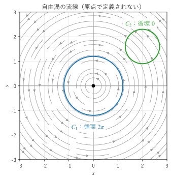
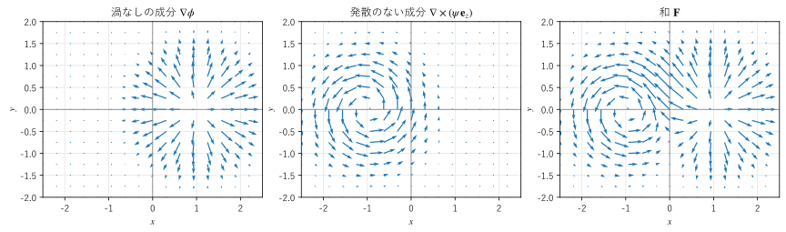

第 16 章 ポテンシャルとヘルムホルツ分解
回転が 0 の場は、あるスカラー場の勾配として書けるか。発散が 0 の場は、あるベクトル場の回転として書けるか。この章では、積分定理を使ってこれらの問いに答え、答えが場の定義される領域の形に左右されることを、自由渦の例で示す。さらに、一般のベクトル場が渦なしの成分と発散のない成分に分けられること（ヘルムホルツ分解）を紹介し、ポテンシャルが満たすポアソン方程式とラプラス方程式を説明する。
スカラーポテンシャル
第 11 章で見たように、ベクトル場 \(\bm{F}\) がスカラー場 \(\phi\) の勾配として \(\bm{F} = \nabla \phi\) と書けるとき、\(\phi\) を \(\bm{F}\) のスカラーポテンシャルという。連続なベクトル場 \(\bm{F}\) について、第 11 章で見た次の 3 条件は互いに同値である（領域は連結であるとする。番号は第 11 章と同じ）。
線積分 \(\int_C \bm{F} \cdot d\bm{r}\) は、曲線 \(C\) の始点と終点だけで決まり、経路によらない。
任意の閉曲線 \(C\) について \(\oint_C \bm{F} \cdot d\bm{r} = 0\) である。
\(\bm{F} = \nabla \phi\) となるスカラー場 \(\phi\) がある（\(\bm{F}\) は保存場である）。
物理では、力 \(\bm{F} = -\nabla U\) や電場 \(\bm{E} = -\nabla V\) のように負号を付けたものをポテンシャル（位置エネルギー、電位）と呼ぶ習慣がある（第 11 章）。負号の違いは本質的ではないので、この章では数学の習慣に従い \(\bm{F} = \nabla \phi\) と書く。
回転が 0 であることは必要条件
\(\bm{F} = \nabla \phi\) なら、第 8 章の公式 \(\nabla \times (\nabla \phi) = \bm{0}\) から \(\nabla \times \bm{F} = \bm{0}\) である。したがって、回転が 0 でない場はスカラーポテンシャルを持たない。\(\nabla \times \bm{F} = \bm{0}\) は、保存場であるための必要条件であり、手軽に確かめられる判定法になる。
逆に、\(\nabla \times \bm{F} = \bm{0}\) なら、必ずスカラーポテンシャルがあるのだろうか。ストークスの定理（第 15 章）を使って考える。領域内の任意の閉曲線 \(C\) について、\(C\) を境界とする曲面 \(S\) が領域内に取れれば
となり、上の条件 2 が満たされる。問題は「\(C\) を境界とする曲面が、領域からはみ出さずに取れるか」である。
単連結な領域
第 11 章で定義した単連結な領域（任意の閉曲線を、領域からはみ出さずに連続的に縮めて 1 点にできる領域）の例を挙げる。
空間全体、球の内部、直方体の内部は単連結である。
空間から 1 点（たとえば原点）を除いた領域も単連結である。原点の周りを回る閉曲線は、原点を避けて縮められる。
空間から直線（たとえば \(z\) 軸）を除いた領域は単連結でない。\(z\) 軸の周りを 1 周する閉曲線は、\(z\) 軸に引っかかって縮められない。
平面から 1 点を除いた領域も単連結でない。
単連結な領域では、閉曲線を縮めていく軌跡がその閉曲線を境界とする曲面になるので、上の議論が成り立つ。まとめると次のようになる。
単連結な領域で \(\nabla \times \bm{F} = \bm{0}\) なら、\(\bm{F}\) はスカラーポテンシャルを持つ。
ポテンシャルの求め方
スカラーポテンシャルは、基準点 \(\bm{r}_0\) から点 \(\bm{r}\) までの線積分 \(\phi(\bm{r}) = \int_{\bm{r}_0}^{\bm{r}} \bm{F} \cdot d\bm{r}\) で求められる。経路によらないので、計算しやすい経路を選べばよい。
領域が原点を含み、原点と領域内の各点を結ぶ線分が領域からはみ出さない場合（空間全体や球の内部など）は、原点から \(\bm{r}\) までの線分 \(t \bm{r}\)（\(0 \le t \le 1\)）に沿って積分するのが簡単である。\(d(t\bm{r}) = \bm{r} \, dt\) なので
となる。ポテンシャルには定数を足す自由度があり、この式は \(\phi(\bm{0}) = 0\) となるものを選んでいる。
たとえば \(\bm{F} = (2xy + z, \ x^2 + 3z, \ x + 3y)\) は、回転を計算すると \(\bm{0}\) になり、空間全体で定義されているので、スカラーポテンシャルを持つ。(21) を SymPy で計算する。
38def scalar_potential(f: sp.Matrix) -> sp.Expr:
39 """∇×F = 0 の場 F に対し、φ(r) = ∫_0^1 F(t r)·r dt を求める（∇φ = F となる）."""
40 return sp.expand(sp.integrate(at_tr(f).dot(R), (t, 0, 1)))
at_tr() は、場の式の \(x, y, z\) を \(tx, ty, tz\) に置き換えて \(\bm{F}(t\bm{r})\) を作る関数である。実行結果は後でベクトルポテンシャルの例とあわせて示す（リスト 55）。\(\phi = x^2 y + xz + 3yz\) が得られ、その勾配が \(\bm{F}\) に一致する。
単連結でない領域の反例：自由渦
第 7 章で見たように、自由渦
は原点以外で回転が 0 なのに、原点を囲む循環は \(2\pi\) である（3 次元で考えるときは \(z\) 成分を 0 とする）。この場は原点（3 次元では \(z\) 軸）で定義されない。原点を中心とする半径 \(R\) の円 \((R\cos t, R\sin t)\) に沿って反時計回りに 1 周すると、\(\oint_C \bm{F} \cdot d\bm{r} = \int_0^{2\pi} (R^2 \sin^2 t + R^2 \cos^2 t) / R^2 \, dt = 2\pi\) となり、循環は半径 \(R\) によらない。
回転が 0 なのに循環が 0 でないので、自由渦はスカラーポテンシャルを持たない。原因は、場の定義される領域（平面から原点を除いたもの）が単連結でないことにある。原点を囲む円を境界とする曲面（円板）は、必ず原点を含んでしまうので、ストークスの定理（グリーンの定理）が使えない。


図 22 自由渦の流線と、原点を囲む閉曲線 \(C_1\)・囲まない閉曲線 \(C_2\)
いろいろな閉曲線で循環を数値積分した結果を示す。
回転の z 成分 ∂Fy/∂x - ∂Fx/∂y = 0（原点以外）
原点を囲む閉曲線
中心 (0, 0)、半径 1 の円: 6.283185
中心 (0, 0)、半径 0.1 の円: 6.283185
中心 (0.5, 0.3)、半径 1 の円: 6.283185
半径 3 と 0.5 の楕円: 6.283185
原点を囲まない閉曲線
中心 (2, 0)、半径 1 の円: 0.000000
中心 (0, -1.5)、半径 0.5 の円: 0.000000
参考：2π = 6.283185
原点を囲む閉曲線では、大きさや形によらず循環は \(2\pi\) になり、原点を囲まない閉曲線では 0 になる。第 13 章の「穴のある領域」で見たように、回転が 0 の場では、穴（原点）を囲む閉曲線をどのように変形しても循環は変わらない。第 14 章の点電荷の場で、原点を囲む閉曲面の流束が形によらず \(4\pi\) だったことと同じ構造である。
サンプルの全体：ch16_vortex.py
局所的なポテンシャル
自由渦は、極座標の角度 \(\theta\) を使うと \(\bm{F} = \nabla \theta\) と書ける。実際、第 9 章の円柱座標の勾配の式で \(\rho\) を \(r\)、\(\phi\) を \(\theta\) に置き換えたものから \(\nabla \theta = \frac{1}{r} \bm{e}_\theta = \frac{(-y, x)}{x^2 + y^2}\) である。
それでもスカラーポテンシャルを持たないのは、\(\theta\) が平面全体で 1 つの値に決まらないからである。原点の周りを 1 周すると \(\theta\) は \(2\pi\) 増え、元の点に戻っても元の値に戻らない。\(\theta\) を 1 つの値に決めるには、たとえば \(x\) 軸の負の部分で切れ目を入れて \(-\pi < \theta < \pi\) とする必要がある。切れ目を入れた領域は単連結なので、その中では \(\theta\) が正しいポテンシャルになる。
この場は、第 15 章の直線電流がつくる磁場 \(\bm{B} = \frac{\mu_0 I}{2\pi\rho} \bm{e}_\phi\) と同じ形をしている。電流の外側では \(\nabla \times \bm{B} = \bm{0}\) だが、電流を囲む閉曲線の循環は \(\mu_0 I\) であり、0 にならない。流体力学では、竜巻や渦糸の外側の流れのモデルになる。
ベクトルポテンシャル
ベクトル場 \(\bm{B}\) が、あるベクトル場 \(\bm{A}\) の回転として \(\bm{B} = \nabla \times \bm{A}\) と書けるとき、\(\bm{A}\) を \(\bm{B}\) のベクトルポテンシャルという。第 8 章の公式 \(\nabla \cdot (\nabla \times \bm{A}) = 0\) から、ベクトルポテンシャルを持つ場は発散が 0 である。
\(\bm{B} = \nabla \times \bm{A}\) なら \(\nabla \cdot \bm{B} = 0\)
逆に、空間全体や球の内部のような領域（原点と各点を結ぶ線分が領域からはみ出さない領域）では、\(\nabla \cdot \bm{B} = 0\) なら、次の式でベクトルポテンシャルが得られる。
一様な場 \(\bm{B}\)（定ベクトル）では \(\bm{A} = \frac{1}{2} \bm{B} \times \bm{r}\) となる。たとえば \(\bm{B} = (0, 0, B_0)\) なら \(\bm{A} = \frac{B_0}{2} (-y, x, 0)\) で、回転を計算すると確かに \((0, 0, B_0)\) になる。
43def vector_potential(b: sp.Matrix) -> sp.Matrix:
44 """∇·B = 0 の場 B に対し、A(r) = ∫_0^1 t B(t r) × r dt を求める（∇×A = B となる）."""
45 integrand = t * at_tr(b).cross(R)
46 return sp.Matrix([sp.expand(sp.integrate(c, (t, 0, 1))) for c in integrand])
\(\bm{B} = (y, z, x)\) は発散が 0 なので、ベクトルポテンシャルを持つ。スカラーポテンシャルの例とあわせて、SymPy で求めた結果を示す。
F = [2*x*y + z, x**2 + 3*z, x + 3*y]
∇×F = [0, 0, 0]
φ = x**2*y + x*z + 3*y*z
∇φ - F = [0, 0, 0]
B = [y, z, x]
∇·B = 0
A = [-x*y/3 + z**2/3, x**2/3 - y*z/3, -x*z/3 + y**2/3]
∇×A - B = [0, 0, 0]
∇×(A + ∇(xyz)) - B = [0, 0, 0]
どちらのポテンシャルも、微分すると元の場に戻る（差が \(\bm{0}\) になる）。
サンプルの全体：ch16_potential_sympy.py
ゲージの自由度
スカラーポテンシャルに定数を足しても勾配は変わらないように、ベクトルポテンシャルには任意のスカラー場 \(\chi\) の勾配を足しても回転は変わらない。
実行結果の最後の行は、\(\chi = xyz\) の勾配を足しても回転が変わらないことを確かめたものである。この自由度をゲージの自由度という。電磁気学では、\(\chi\) をうまく選んで \(\nabla \cdot \bm{A} = 0\) となるようにすること（クーロンゲージ）が多い。
発散が 0 でもベクトルポテンシャルを持たない例
スカラーポテンシャルと同じように、ベクトルポテンシャルの存在も領域の形に左右される。第 14 章の点電荷の場 \(\bm{F} = \bm{r} / r^3\) は、原点以外で発散が 0 である。もし \(\bm{F} = \nabla \times \bm{A}\) と書けたとすると、原点を中心とする球面 \(S\) について、\(S\) を赤道で上下 2 つの半球面に分けてストークスの定理を使うと
となるはずである。ここで \(C\) と \(C'\) は同じ赤道を互いに逆向きにたどる閉曲線なので、和は 0 になる。ところが実際の流束は \(4\pi\) なので、矛盾する。空間から原点を除いた領域は単連結だが、原点を囲む閉曲面を、領域からはみ出さずに縮めて 1 点にすることはできない。ベクトルポテンシャルの存在には、閉曲線ではなく閉曲面が縮められるかどうかが関係する。
ヘルムホルツ分解
ここまでで、2 種類の特別な場が分かった。
渦なしの場（\(\nabla \times \bm{F} = \bm{0}\)）：スカラーポテンシャルの勾配 \(\nabla \phi\) で書ける。
発散のない場（\(\nabla \cdot \bm{F} = 0\)、ソレノイダルな場ともいう）：ベクトルポテンシャルの回転 \(\nabla \times \bm{A}\) で書ける。
一般のベクトル場は、この 2 種類の和に分けられる。
これをヘルムホルツ分解という。第 1 項は回転が 0、第 2 項は発散が 0 なので、両辺の発散と回転をとると
となる。つまり、\(\bm{F}\) の発散（湧き出し）が渦なしの成分を決め、\(\bm{F}\) の回転（渦）が発散のない成分を決める。図 23 は、湧き出しのある渦なしの成分と、渦のある発散のない成分を足し合わせて、1 つの場を組み立てたものである。


図 23 渦なしの成分と発散のない成分を足し合わせた場
2 次元の場では、発散のない成分を \(\nabla \times (\psi \bm{e}_z) = (\partial \psi / \partial y, \ -\partial \psi / \partial x)\) と書ける。\(\psi\) は流体力学で流れ関数と呼ばれる。図では \(\phi = -e^{-((x-1)^2 + y^2)}\)、\(\psi = e^{-((x+1)^2 + y^2)}\) とした。各成分の発散と回転を SymPy で確かめた結果を示す。
渦なしの成分の回転 : 0
発散のない成分の発散 : 0
和の発散 - ∇²φ : 0
和の回転の z 成分 + ∇²ψ : 0
渦なしの成分は回転が 0、発散のない成分は発散が 0 であり、和の発散は \(\nabla^2 \phi\)、和の回転は \(-\nabla^2 \psi\) だけで決まっている。
サンプルの全体：ch16_helmholtz.py
分解の求め方と一意性
空間全体で定義され、無限遠で十分速く 0 に近づく場 \(\bm{F}\) では、\(\phi\) と \(\bm{A}\) を次の式で求められる。
\(\nabla'\) は \(\bm{r}'\) についての微分を表す。これらの式は、次節のポアソン方程式の解の公式から導かれる。この場合、分解は一意である。発散も回転も 0 で、無限遠で 0 に近づく場は、恒等的に 0 の場しかないからである。
有界な領域では、発散と回転だけでは場は決まらず、境界での条件（境界を通る流束など）が必要になる。第 18 章で扱う流体シミュレーションの圧力投影は、速度場から渦なしの成分を取り除き、発散のない成分だけを残す操作であり、ヘルムホルツ分解の代表的な応用である。
ポアソン方程式とラプラス方程式
渦なしの場 \(\bm{F} = \nabla \phi\) の発散（湧き出しの分布）\(s\) が分かっているとき、\(\nabla \cdot \bm{F} = \nabla \cdot (\nabla \phi) = s\) から、ポテンシャルは次の方程式を満たす。
これをポアソン方程式という。特に湧き出しがない場合（\(s = 0\)）の
をラプラス方程式という（その解が第 8 章で見た調和関数である）。工学では、たとえば次のような場面で現れる。表の \(\rho\) は電荷密度または質量密度であり、円柱座標の \(\rho\) とは別である。
分野 |
方程式 |
意味 |
|---|---|---|
静電場 |
\(\nabla^2 V = -\rho / \varepsilon_0\) |
\(\bm{E} = -\nabla V\) とガウスの法則 \(\nabla \cdot \bm{E} = \rho / \varepsilon_0\) から |
重力場 |
\(\nabla^2 U = 4\pi G \rho\) |
質量密度 \(\rho\) が、単位質量あたりの位置エネルギー（重力ポテンシャル）\(U\) の源 |
定常な熱伝導 |
\(\nabla^2 T = 0\) |
熱源のない物体の中の、時間変化しない温度分布（第 17 章） |
ポテンシャル流 |
\(\nabla^2 \phi = 0\) |
渦なしで非圧縮性の流れの速度ポテンシャル（第 17 章） |
基本解
第 9 章で見たように、\(\nabla^2 (1/r) = 0\)（\(r \neq 0\)）である。\(\phi = -\frac{1}{4\pi r}\) とすると \(\nabla \phi = \frac{\bm{r}}{4\pi r^3}\) であり、第 14 章の結果から、原点を囲む閉曲面を通る流束は \(\frac{1}{4\pi} \cdot 4\pi = 1\) になる。つまり \(-\frac{1}{4\pi r}\) は、原点に強さ 1 の湧き出しが集中している場合のポアソン方程式の解である。これを基本解という。
湧き出しが \(s(\bm{r}')\) で分布している場合は、各点の湧き出しがつくるポテンシャルを重ね合わせて
が解になる。静電場では \(s = -\rho / \varepsilon_0\) なので \(V(\bm{r}) = \frac{1}{4\pi\varepsilon_0} \iiint \frac{\rho(\bm{r}')}{|\bm{r} - \bm{r}'|} \, dV'\) となり、点電荷の電位 \(\frac{q}{4\pi\varepsilon_0 r}\) を重ね合わせたものに一致する。
解の一意性
有界な領域 \(V\) で、境界 \(\partial V\) 上の \(\phi\) の値を与えてポアソン方程式を解く問題を考える。解が 2 つあったとして、その差を \(u\) とすると、\(\nabla^2 u = 0\) で、境界上で \(u = 0\) である。第 14 章のグリーンの恒等式で \(f = g = u\) とすると
となる。被積分関数 \(|\nabla u|^2\) は 0 以上なので、\(\nabla u = \bm{0}\)、つまり \(u\) は定数である。境界で \(u = 0\) なので \(u = 0\) となり、2 つの解は一致する。境界の値が決まれば、内部の解はただ 1 つに決まる。
調和関数の性質
第 8 章で見たように、調和関数は平均値の性質を持ち（各点の値が周囲の平均に等しい）、定数でなければ最大値・最小値を境界でとる（最大値原理）。この「周囲の平均をとる」という性質は、第 18 章でラプラス方程式を数値的に解くヤコビ法の考え方の基礎になる。
この章のまとめ
回転が 0 であることは、スカラーポテンシャルを持つための必要条件である。単連結な領域では十分条件にもなる。
自由渦は原点以外で回転が 0 だが、原点を囲む閉曲線の循環は \(2\pi\) であり、スカラーポテンシャルを持たない。領域が単連結でないためである。
発散が 0 の場はベクトルポテンシャルを持つ（空間全体などの領域で）。ベクトルポテンシャルには勾配を足す自由度（ゲージの自由度）がある。
ヘルムホルツ分解により、一般のベクトル場は渦なしの成分と発散のない成分の和に分けられる。発散が前者を、回転が後者を決める。
渦なしの場のポテンシャルはポアソン方程式 \(\nabla^2 \phi = s\) を満たす。湧き出しがなければラプラス方程式になり、その解（調和関数）は境界の値で一意に決まる。